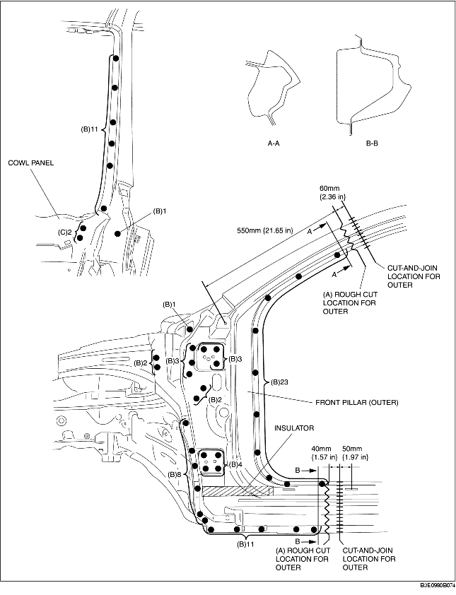
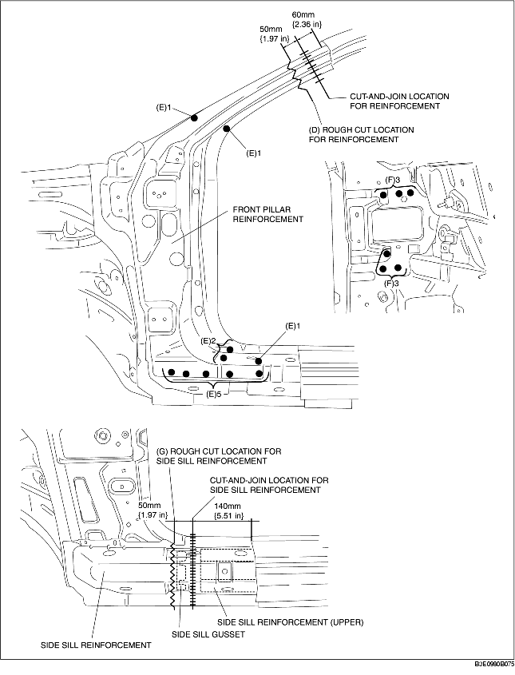
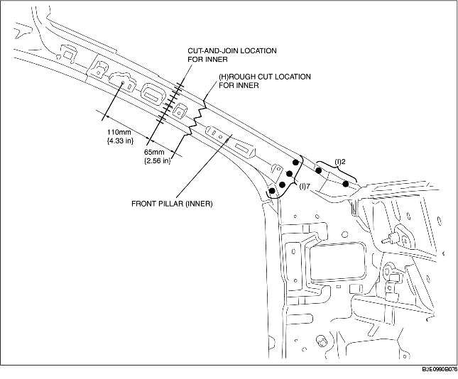

1. Rough cut area (A) and drill the 69 locations indicated by (B).
2. When the front pillar (outer) is being removed, the cowl panel may interfere with the front pillar (outer) and make removal difficult. Therefore, drill the 2 locations indicated by (C) and then open the cowl panel outward.
3. Remove the front pillar (outer).

4. Rough cut area (D) and drill the 10 locations indicated by (E).
5. Drill the 6 locations indicated by (F) from the interior.
6. Remove the front pillar reinforcement.
7. Rough cut area (G) and remove the side sill reinforcement.

8. Rough cut area (H), drill the 9 locations indicated by (I), and then remove the front pillar (inner).
